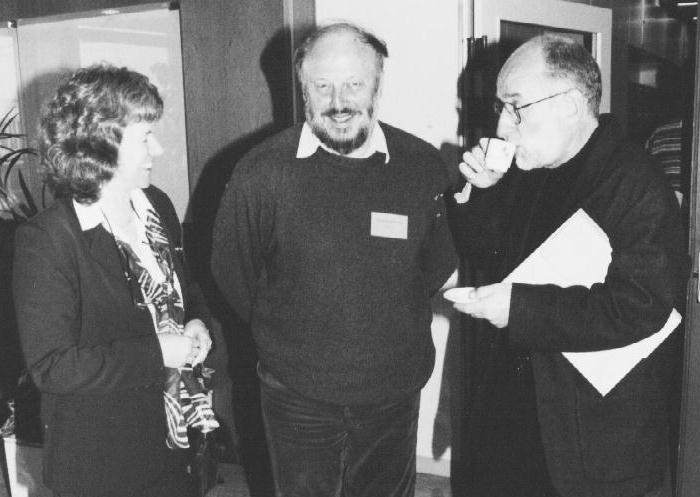

From the ILL Newsletter - An award-winning chemist in neutron scattering
 This year, the Wolfson Foundation of the Royal Society gave several grants
to help set up computing systems to handle large data volumes. Judith
Howard, professor of chemistry at the University Durham, one of the
recipients received £100,000. "Lord Wolfson is really amazing", Judith
remembers her invitation to the celebration of the grant allocation, "I
thanked him for the grant and he replied that he has to thank all these
bright people who make such a good use of the money".Her idea was to
refurbish a couple of labs of the chemistry department in order to create a
bioinformatics centre. "Fume cupboards will be pulled out and
air-conditioning will be installed for new computers.This grant will mainly
be used to get the infrastructure and only about 20% will go into
hardware," Judith explains. With her enthusiasm, she will also find the additional money required for manpower.
This year, the Wolfson Foundation of the Royal Society gave several grants
to help set up computing systems to handle large data volumes. Judith
Howard, professor of chemistry at the University Durham, one of the
recipients received £100,000. "Lord Wolfson is really amazing", Judith
remembers her invitation to the celebration of the grant allocation, "I
thanked him for the grant and he replied that he has to thank all these
bright people who make such a good use of the money".Her idea was to
refurbish a couple of labs of the chemistry department in order to create a
bioinformatics centre. "Fume cupboards will be pulled out and
air-conditioning will be installed for new computers.This grant will mainly
be used to get the infrastructure and only about 20% will go into
hardware," Judith explains. With her enthusiasm, she will also find the additional money required for manpower.
At present, Judith Howard has a five-year sabbatical from teaching duties.
Her outstanding research work was rewarded by the EPSRC senior fellowship
award allowing her to leave teaching and most of administration for a few
years to be productive in research. Judith knows what she wants to do during
the next years, "I am looking forward not only to having the ideas, but
really having the chance to do it, too".
Why did she go into science? She admits that she was actually better on
paper in the arts and for her excellent school marks in arts, at the age of
15, she received a prize of her choice - a chemistry book. This extended her
interest in chemistry. It is fascinating to follow her description which is
underlined by her expression. She is an elegantly dressed lady, but the
lively, effervescent girl is still there.
First Judith read physics and maths and then honours chemistry in Bristol.
"There was this red head sitting in my class", Alan Leadbetter says, "I
remember her well because this was my first year of teaching". After
graduating in Bristol in 1966, Judith went to Oxford to work with Dorothy
Hodgkin who remained a life-long friend and mentor. Originally, Judith's
work was concerned with the study of insulin. But finally, she spent most of
her time at Harwell where she got involved in the construction of a
low-temperature device working with Terry Willis. This is also where she met
first Sax Mason, who became later her main collaborator at the ILL.
In 1969, Judith returned to Bristol and started to study
organometallicLehmann at a conference in Denmark, that neutrons came back
into her studies upon Mogens' encouragement. A year later she did her first
neutron experiment at the ILL. Since then she has remained in close contact
with the ILL: she has held ILL studentships, trainees from her lab come out
regularly, and she became involved in the ILL's review committees.
Despite her extensive travelling, because she is invited to talks and is on
many committees, Judith is known for taking care of people. She has an open
ear for her students if they have any problems. And she will take the time
to introduce a new student to neutron scattering herself. In addition to her
dedicated work, for years she travelled daily between Bristol and Swindon
(90 miles) where her husband works. Now, their homes are even further apart.
In 1991, she moved to Durham, where she was then the only female chemistry
professor in Britain. At this time, she began the study of organic
non-linear optical materials (see also ILL annual report 1996, p.14), again
rather complex materials. These systems show charge-transfer effects which
are of interest for optical computing. Hydrogen bonding plays an important
role in these interactions, and thus neutrons are an important tool for
these investigations. These measurements produce large data-sets which have
to be analysed to get the crystallographic information. Because of this,
computing became more and more important over the years.

Judith Howard chairing the ILL's single-crystal review in spring 1998, with
Clive Wilkinson, centre, and Mogens Lehmann
Photograph reproduced by kind permission of 'ILL News for reactor users'
June 1999
Judith is involved in many scientific collaborations, to name a few:
instrumental development for cooling devices near helium-temperature,
crystal growing, computer simulation. "We are working now over 20 years
together", Sax Mason says, "but I worry about her, Judith takes on too many
things". Sax is not the only one who remarks this. Alan Leadbetter confirms,
"she is crazy, she does too many things - but she does them all well".
This year, Judith won the award for structural chemistry of the Royal
Society of Chemistry in Britain. This award honours her pioneering work of
x-ray and neutron diffraction for locating hydrogen atoms in the presence of
heavy metals. It is recognised that she established the structures of a
number of key transition-metal hydrides, whereby the development of
low-temperature devices played a key role in her achievements: it allowed
her to study unstable compounds and monitor phase changes. In addition,
Judith plays a major role in the national and international
structural-chemistry community.
At present, she struggles through the organisation of the international
crystallography conference (IUCr) which will be held in Glasgow this summer.
But after this she should be able to enjoy her 'free time' of her
fellowship.
Editor's Note: This article was reprinted from the 'ILL News for
reactor users' no.31 June 1999. I am grateful to the editor for
permission to reprint it here.
She is Dr. Herma Buttner, Scientific Coordination Officer at the Institut Laue-Langevin, Avenue des Martyrs, BP 156, 38042 Grenoble Cedex 9, France etl: +33 76 20 71 79 email: buttner@ill.fr